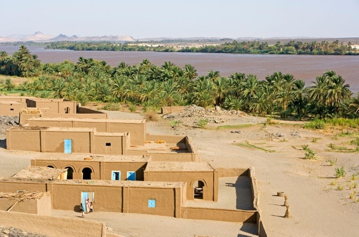
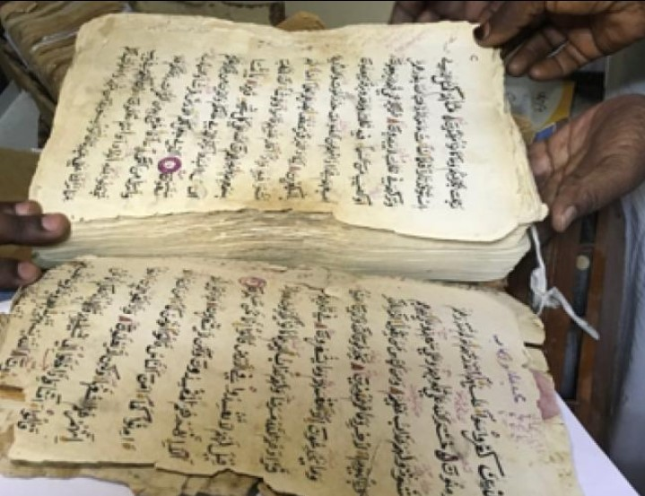

الجذور والنشأة
التعريف بالروايات التاريخية حول نشأة الشايقية وأصولهم.
استكشف التاريخمصمم موسوعة الشايقية
نافذتك للتعرف على تاريخ قبيلة الشايقية، وجذورها التاريخية، وتراثها الثقافي، وعاداتها وتقاليدها، وشخصياتها البارزة.
الشايقية من المجموعات القبلية المعروفة في شمال السودان، ولها حضور تاريخي وثقافي واجتماعي بارز في منطقة وادي النيل.
تهدف هذه الموسوعة إلى جمع المعلومات التاريخية والثقافية والاجتماعية، وتوثيق الروايات والوثائق والمراجع المتعلقة بالشايقية، وإتاحتها للباحثين والمهتمين والزوار.
اقرأ المزيد
تعرف على المراحل التاريخية والأحداث التي شكلت تاريخ المنطقة ومجتمع الشايقية.
التعريف بالروايات التاريخية حول نشأة الشايقية وأصولهم.
استكشف التاريخالتعرف على الزعامات والمشيخات والنظم الاجتماعية والسياسية.
اكتشف المزيدتوثيق المعارك والأحداث التاريخية والتحولات السياسية.
اقرأ الأحداث

التراث ليس مجرد ماضٍ نحكي عنه، بل ذاكرة تحفظ العادات والتقاليد واللغة والفنون والحياة الاجتماعية للأجيال القادمة.
اكتشف التراثنعتمد على الكتب والدراسات والوثائق والروايات الشفوية الموثقة في إعداد محتوى الموسوعة.